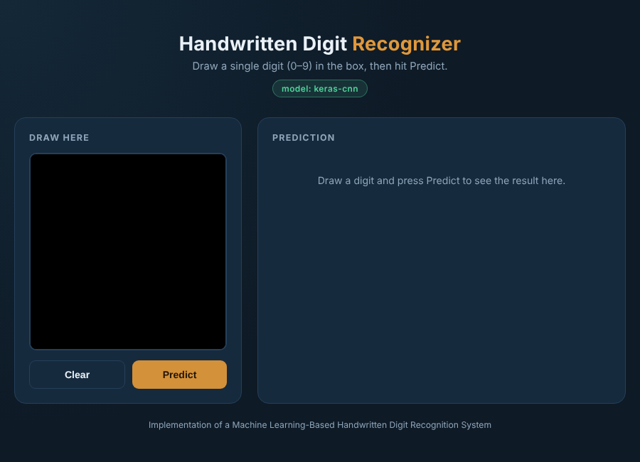
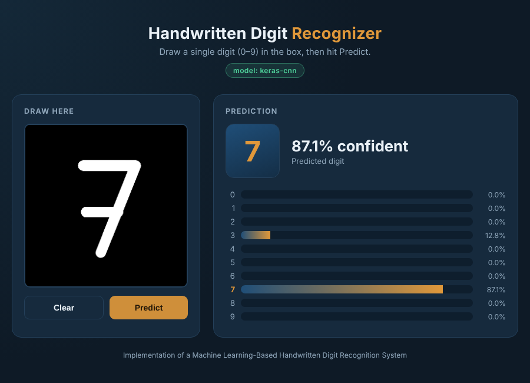
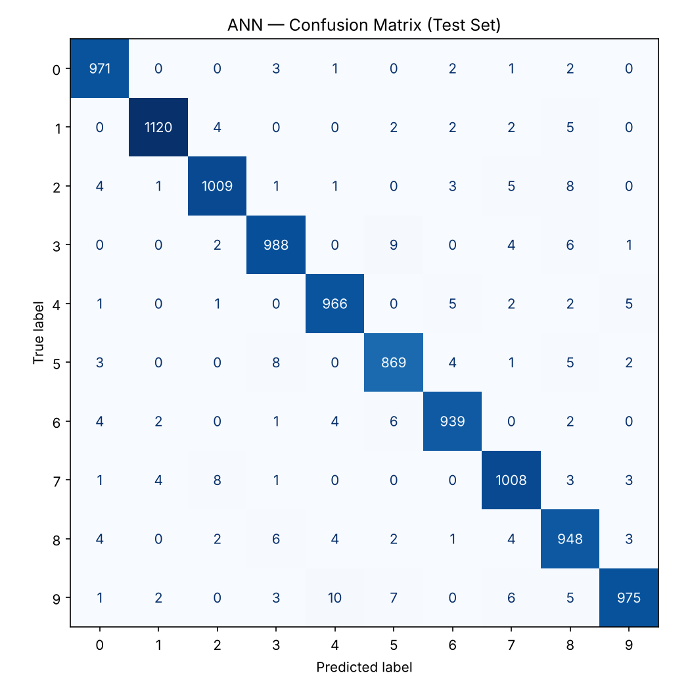
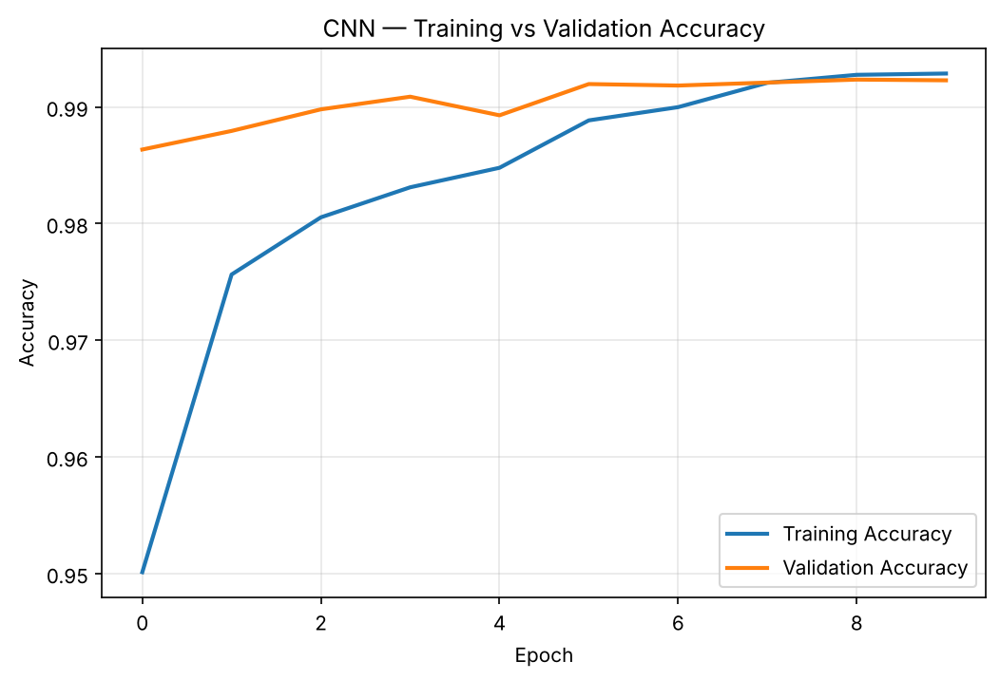
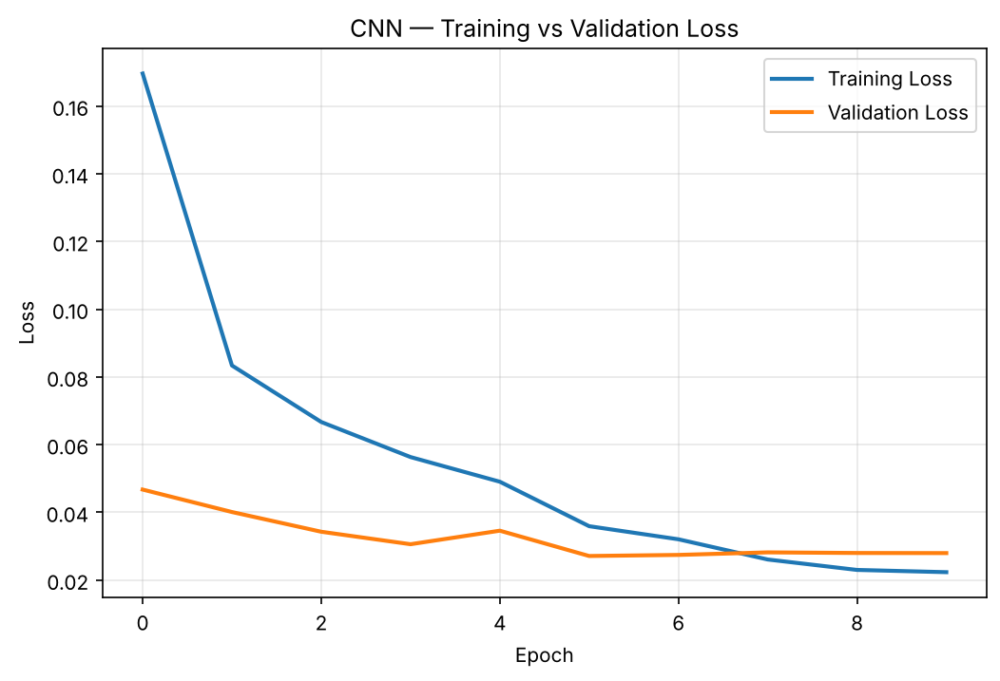

Machine learning · MNIST · CNN
Draw a number with your mouse, touchpad or finger. A neural network trained on 60,000 real handwritten digits reads it back in a few milliseconds — all inside your browser, nothing is uploaded.
Live demo
Write one digit, 0 to 9, large and in the middle of the board. The result appears when you lift the pen, or press Predict.
Tips: one digit at a time · fill most of the board · any stroke thickness works — the page thins your lines to a single pen width before the network sees them.
How it works
A drawing on a canvas looks nothing like a clean MNIST image, so the page converts it first. The same recipe was used to build the training data.
Your strokes land on a 280×280 canvas with an 18-pixel brush.
Strokes are thinned to a 1-pixel centre line and redrawn with one fixed pen, so thick or thin writing looks the same.
The digit is cropped, scaled to 20 px, and centred by centre of mass in a 28×28 image, exactly like MNIST.
A CNN outputs ten probabilities. The biggest one is the answer.


Results
Measured on the 10,000 MNIST test images the models never saw during training, plus drawings that mimic mouse input.
The CNN learns strokes and curves directly from the pixels, which is why it beats the dense-layer ANN.
| Test | Plain resize | Pen pipeline |
|---|---|---|
| Stroke fonts never trained on | 57.1% | 100% |
| Simulated mouse drawings | 73.4% | 99.9% |
| Typeset (filled) digits | 23.5% | 92.4% |



Honest limits: the drawn-digit tests use synthetic drawings (fonts and a stroke generator), not hundreds of real people. Very unusual handwriting or decorative fonts can still be misread — if it gets one wrong, draw it again a little larger and clearer.
About the project
Cornerstone project, School of Information Technology, Madhav Institute of Technology & Science, Gwalior.
Pushpendra Lodhi BTIT24O1108
Prabhanshu Katra BTIT24O1095
Guide
Prof. Neha Bhardwaj